1501 | антоненко олег
Здесь ты найдешь самую важную информацию о любимом исполнителе
Антоненко Олег
- российский певец, видеоблогер, известный в узких кругах в Интернете.
Родился 15 января 1998 года в городе Зеленограде. Начал заниматься музыкальным творчеством в 8 лет.
Окончил кафедру вокала в Московском государственном институте культуры (МГИК) и в данный момент
нашёл себя в русле преподавания вокала.
Солист группы Cindy Rocket, в составе которой 14 февраля 2016 года выпустил музыкальный альбом «M-Ocean».
Впоследствии стал работать под псевдонимом 1501. Свою музыку распространяет и продаёт на ряде
интернет-сервисов, в том числе Apple Music, Яндекс Музыка, Spotify и iTunes.
Музыкальной деятельностью, как уже было сказано, занимается под псевдонимом 1501,
но на просторах интернета можно найти несколько его песен от имени Антоненко Олега.
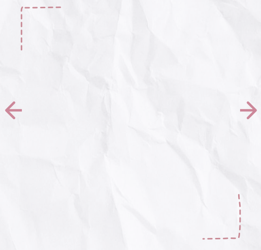
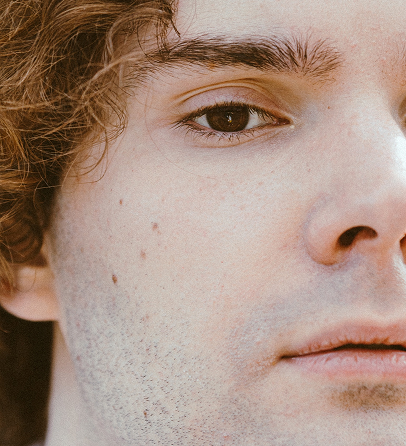
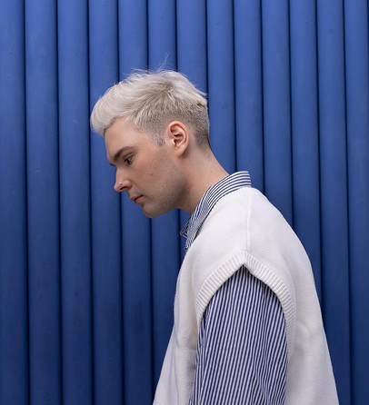
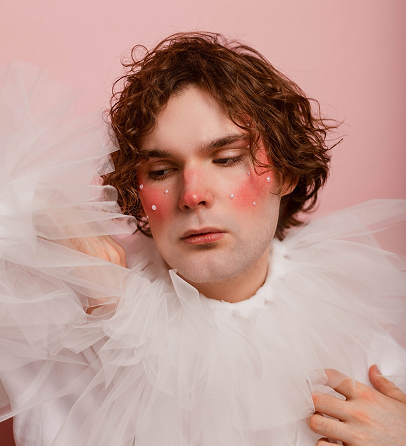
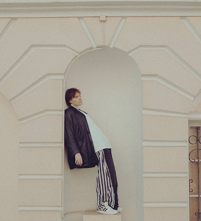
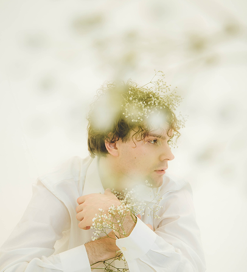
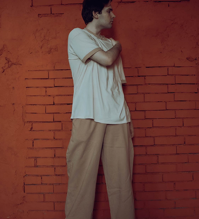
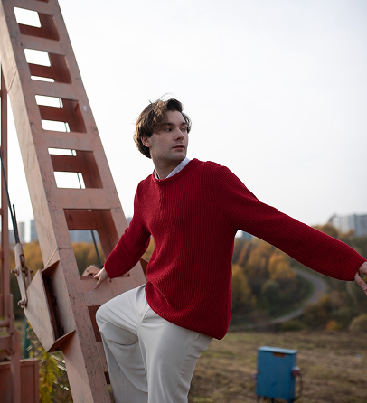
На YouTube обладает каналом под названием «олежка», на который подписано более 170 тысяч человек.
Снимать видео начал в 2010 году. Тематика видео в основном — стандартные видео развлекательного
характера, подкасты и лайфстайлы с простыми заголовками, в которых он делится своим опытом в
свиданиях, проблемами, связанными как с ментальным здоровьем, так и с внешностью и восприятием
себя, влогами с путешествий и т. д. Ранее вёл канал “АО”, обладающий статусом подтвержденного,
и на который подписано 144 тысячи человека. Однако с июня 2020 года активность на нём практически
полностью прекратилась, о чём было объявлено в видео под названием «Я закрываю канал», однако на
деле просто объявил о создании нового канала с иным названием.
На просторах интернета можно увидеть коллаборации Олега с такими блогерами, как Anastasiz, лизкеч,
Nikol Koulen, Оксана Флаф, Даша Манакова, Есаул, Чабби, Макс Немцев, TarelkO, а также появлялся на
каналах многих других блогеров. В скандалах никогда не участвовал.
Новости | News
Новая песня вышла 20 декабря 2024 г., прямо перед Новым годом, совместно с Екатериной Яшниковой - “забудь о проблемах”
Сама Екатерина опубликовала пост следующего содержания: “Сегодня релизная пятница, и, думаю, самое время рассказать о песне, которая вышла 20 декабря. Мне кажется, это отличный подарок на Новый год, можете положить его под ёлку, или включить, пока её наряжаете). Это - фит с Олежкой, и мне нравится, что трек получился приджазованным (я что, зря что ли в джазовом колледже учусь?). В общем, легкая новогодняя песня специально для тех, что хочет подышать после "Хорошей" или принципиально не слушал этот альбом). С Наступающим!”
Хамитова Элина, популярный арт-фотограф, режиссёр и креатор, создающая контент для брендов и медийных лиц, поделилась информацией о своём сотрудничестве с Олегом при создании своего веб-сериала
В одной из своих социальных сетей Элина рассказала: “Мне написал исполнитель 1501 и предложил свою песню в качестве саундтрека к моему сериалу “Дейтинг”. Я режиссёр и фотограф, и я снимаю сериал вертикального формата про девушку, которая отчаянно пытается найти свою любовь в приложениях для знакомств. Олег предложил мне два трека: первый это “Они не ты”, а второй - “Тело” “. К слову, обе эти песни музыкант выпустил в 2024 году в рамках альбома “фаза”.
Песня «бойся бед» уже в сети!!!
“Мне хотелось создать мантру для себя и слушателей, которые продолжают сталкиваться с наплевательским
отношением. Такую песню, которая сможет защитить и придать уверенность. Песня «бойся бед» не призыв
вредить другим, она про самоуважение. Времена, когда вы старались быть хорошими, всепонимающими для
человека закончились - «будет тьма, где был свет».
Под «колядованием» обозначил заигрывание хорошим отношением со всеми. «Колядки» обычно пели на Рождество,
восхваляя дом соседей, их семью и в ответ получали угощения. Пою про людей, которые колядуют только
для выгоды, чтобы собрать «побольше конфет» и в их словах нет никакого веса”.
В одном из последних своих видеороликов на канале “олежка”, вышедшем 10 дек. 2024 г., музыкант поделился с подписчиками своей проблемой, связанной с частичным облысением и дальнейшими изменениями во внешности
В видеоролике под названием “Кардинально меняю внешность из-за облысения” Олег показал, как выглядит его затылок из-за частичного облысения. Он поделился своими переживаниями по поводу этого: “ Мне очень страшно, потому что мои волосы мне очень нравятся. Я буду по ним скучать. Я понимаю девушек, который сильно расстраиваются, когда им подстригают даже просто кончики волос. Я уверен, что буду чувствовать себя страшным. Я уже чувствую себя страшным уродом, хотя не понимаю, почему”. Олег боролся с облысением на протяжении 2 лет, но это не помогло и в итоге музыкант принял решение осветлить волосы и коротко подстричься, поскольку такая причёска смогла сделать проплешины незаметными. Многие его друзья и родственники отметили, что “это что-то новое” для Олега, непривычное. Подписчики активно поддержали его в сложившейся ситуации и пишут комментарии в его соц.сетях, что новый стиль ему очень к лицу. Сам блогер планирует недолгое время “поносить” новую причёску, а затем сделать пересадку волос.
17 июля 2024 г. прошёл сольный концерт 1501 в клубе “16 тонн” в Москве, на котором музыкант презентовал свой новый альбом “фаза”.
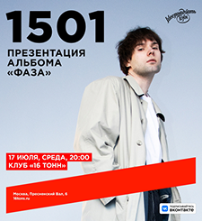
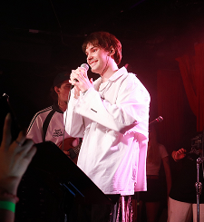
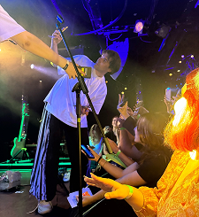
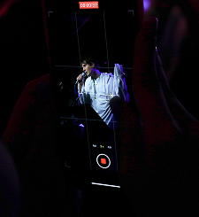
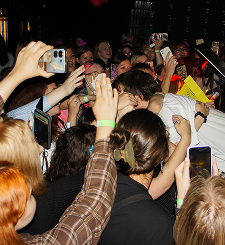
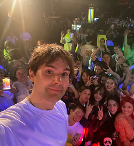
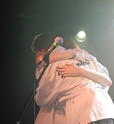
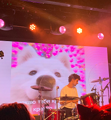
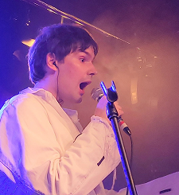
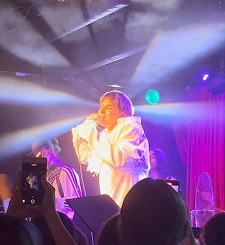
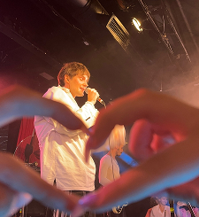
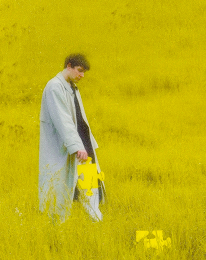
фаза
Перейти к прослушиванию
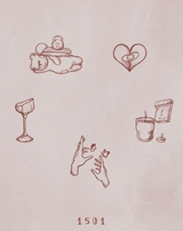
дневник
Перейти к прослушиванию
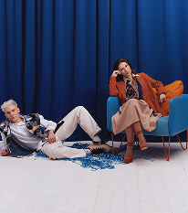
забудь о проблемах
Перейти к прослушиванию
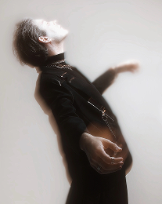
бойся бед
Перейти к прослушиванию
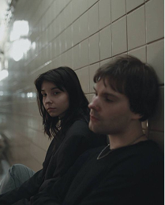
Another Prey os Yours
Перейти к прослушиванию
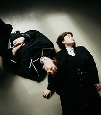
не надо нас возвращать
Перейти к прослушиванию
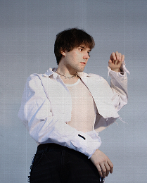
тело
Перейти к прослушиванию
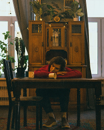
проведём день влюблённых
Перейти к прослушиванию
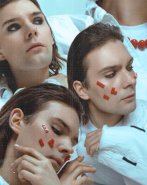
всё было игрой
Перейти к прослушиванию
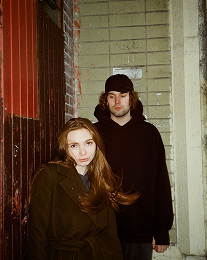
плакать больше не буду
Перейти к прослушиванию
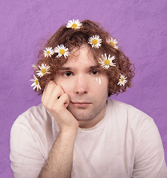
любовь пройдёт не скоро
Перейти к прослушиванию
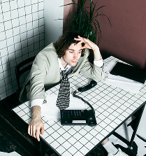
вот бы не работать
Перейти к прослушиванию
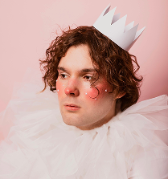
бездарен
Перейти к прослушиванию
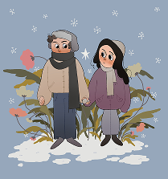
зима с тобой - весна
Перейти к прослушиванию
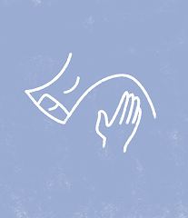
бабочки
Перейти к прослушиванию
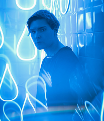
мокну под дождём
Перейти к прослушиванию
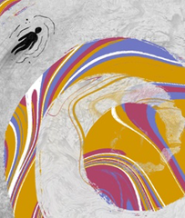
опустошён
Перейти к прослушиванию
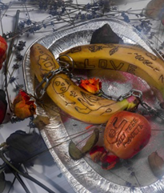
it's not me
Перейти к прослушиванию
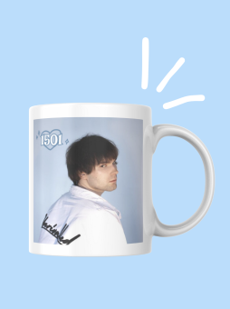
Перейти на сайт магазина
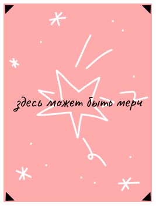
Перейти на сайт магазина
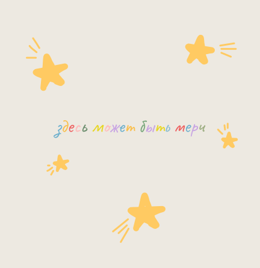
Перейти на сайт магазина
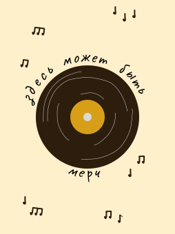
Перейти на сайт магазина
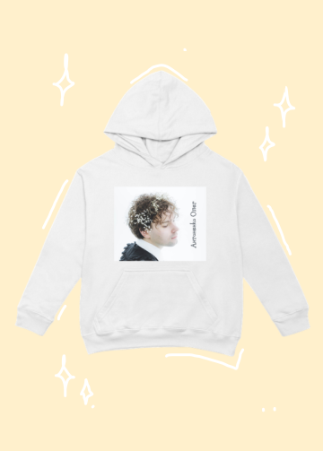
Перейти на сайт магазина
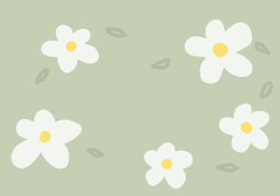
Перейти на сайт магазина
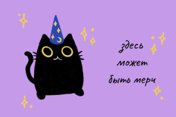
Перейти на сайт магазина
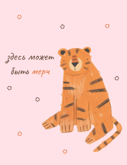
Перейти на сайт магазина
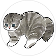
Чуканов Данила
кодер
граф фон арбуз
Карюкин Александр
кодер
ананас...
Чыныбекова Айдара
дизайнер
вери хот патэйта, яу.
Юлия Менг
тестер
Волшебная груша
Надежда Тяпкина
дизайнер
фейхооаа
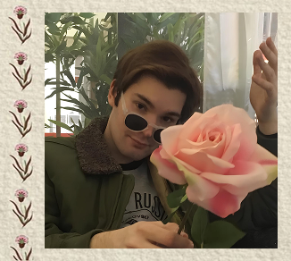
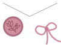